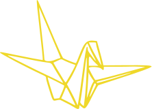

Hello, I’m Dalena! A UX Designer based in the Bay Area, Califorina. My goal is to create meaningful experiences using the power of storytelling and design thinking as my foundations for creating things that delight the senses, enrich experiences, and build better communities.
I can’t wait to help you tell your story through design!

A little about me
From a very young age, I've always been passionate about telling stories as well as creating things from scratch. In high school, one of the things I like to do in my spare time was to perfect and master the skills of "paper folding" or Origami. I found enjoyment in making handmade craft gifts for friends and family.
My educational background includes a BA in business and finance which has taught me the importance of marketing and an understanding of the brand's identity. Throughout my studies, I was able to concede techniques in analysing and understanding consumer populations, market segmentation and demographically diverse consumer behaviour. This made me realise that I enjoy examining the connections between individuals while helping people create meaningful experiences.
Throughout my experience as a Financial Advisor, one of the most important skills was to understand the client’s needs and research on the side strategy that best fits their circumstance. I love the challenge of problem-solving and working with different people to come up with an optimal solution.
I realised the power of storytelling most profoundly as a Financial Adviser. To have an optimal plan for my clients, I had to understand their end goal by crafting meaningful questions. Tailoring each client’s plan required looking at each individual circumstance and not as a whole. Thus, above all, I had to harness the emotion of deeply personal stories - stories to support my recommendation.
In 2018, after relocating to the United States from Australia, I discovered the field of UX. My childhood passion for design told me to take the chance. Thus, with all my experiences and as an advocate - for families, for the environment, for deep listening and heartfelt conversations - with me, I can’t wait to help you tell your story through design.
Get a summary of my work
SUMMARY
Bay Area-based designer using the power of storytelling and design thinking as my foundations for creating in-home, in-store, and online experiences and digital products.
TOOLS
Figma
InVision
Photoshop
Usability Hub
HTML, CSS,
JavaScript
GitHub
SKILLS AND ABILITIES
Visual Design
UX/UI Design
User Research & Testing
Brand strategy & Identity
Information Architecture
Persona & User stories
Wireframing & Prototyping
I'm always looking forward to my next adventure in design !
Want to chat?